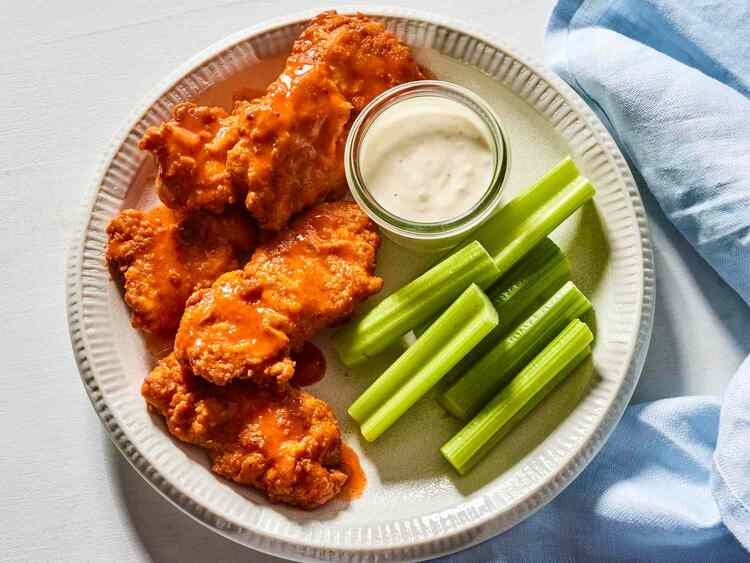

Boneless

Recipe description
These boneless wings are a great way to have chicken. I had these at a pub and fell in love with the taste. They're a nice change from your regular chicken wings. Serve with blue cheese dressing for dipping.
Ingredients
- oil for deep frying
- 1 cup unbleached all-purpouse flour
- 2 teaspoons salt
- 1/2 teaspoon ground black pepper
- 1/2 teaspoon cayenne pepper
- 1/2 teaspoon paprika
- 1/4 teaspoon garlic powder
- 1 egg
- 1 cup milk
- 3 skinless, boneless chicken breasts, cut into 1/2 inch strips
- 1/4 cup hot pepper sauce
- 1 tablespoon butter
Steps
- Gather all ingredients and heat oil in a deep-fryer or large saucepan to 375 degrees F (190 degrees C).
- Combine flour, salt, black pepper, cayenne pepper, paprika, and garlic powder in a large bowl.
- Whisk together egg and milk in a small bowl.
- Dip each piece of chicken in egg mixture, then roll in flour mixture. Repeat so that each piece of chicken is double-coated. Refrigerate breaded chicken for 20 minutes.
- Fry chicken in hot oil in batches. Cook until golden brown and juices run clear, 5 to 6 minutes. An instant-read thermometer inserted into the center should read at least 165 degrees F (74 degrees C).
- Combine hot sauce and butter in a microwave-safe bowl. Heat sauce in the microwave until melted, 20 to 30 seconds. Pour sauce over fried chicken; mix to coat.
- Serve and enjoy!